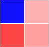

Wenn Sie doppelt auf eine gruppierte Zeichnung klicken oder den Dialog Details Zeichnung öffnen und im linken Bedienfeld das Symbol der Datenzeichnung für den ersten Datensatz auswählen, dann öffnen Sie die Registerkarte Gruppe im Dialog Details Zeichnung.
Die verfügbaren Bedienelemente auf dieser Registerkarte variieren abhängig vom Diagrammtyp und den auf anderen Registerkarten gewählten Optionen des Dialogs Details Zeichnung. Verwenden Sie diese Bedienelemente, um zu bestimmen, wie Stile systematisch auf gruppierte Zeichnungen angewendet werden.
| Allgemeine Registerkarte Gruppe. | Registerkarte Gruppe für Heatmap mit aufgeteilten Kacheln |
|
Hinweis: Die bevorzugte Methode zum benutzerdefinierten Anpassen von gruppierten Datenzeichnungen besteht darin, den Bearbeitungsmodus auf Abhängig zu setzen und das Inkrementierungsverhalten der Zeichnungselemente anzupassen (siehe Nächstes). |
Verwenden Sie diese Bedienelemente, um die Darstellung der gruppierten Diagramme anzupassen und zugleich "Inkrementelle Gruppenlisten" zu entwickeln.
Klicken Sie auf die Auswahlliste der Inkrementspalte, um das Inkrementierungsverhalten festzulegen.
| Kein |
Bei dieser Option wird keine Inkrementierung verwendet, und das erste Zeichnungselement wird auf alle Mitglieder der Gruppe angewendet. |
|---|---|
| Durch Eins |
Die Liste Details wird zum Inkrementieren verwendet. Ist die Liste kürzer ist als die Anzahl der Mitglieder in der Gruppe, wiederholen sich die Zeichnungselemente vom Anfang, wenn die Liste ihr Ende erreicht hat. |
| Dehnung |
Die Liste Details wird zum Inkrementieren verwendet. Ist die Liste länger oder kürzer als die Anzahl der Mitglieder in der Gruppe, verwendet das erste Mitglied das erste Listenelement, das letzte Mitglied das letzte Listenelement, und die anderen Mitglieder interpolieren das entsprechende Element. |
| Eingeteilt |
Die Liste Details wird zum Inkrementieren verwendet. Wenn die Liste nicht kürzer ist als die Anzahl von Gruppenmitgliedern, werden die Mitglieder in der Liste entsprechend der Anzahl der Mitglieder in der Gruppe eingeteilt, und das mittlere Mitglied in einer Klasseneinteilung wird für das entsprechende Mitglied in der Gruppe verwendet. Sollte die Liste kürzer sein als die Anzahl der Mitglieder in der Gruppe, wird die Klasseneinteilung trotzdem durchgeführt, aber das gleiche Mitglied in der Liste wird auf mehrere Mitglieder in der Gruppe angewendet. |
| Mappenlangname/Mappenname/Blattname |
Die Liste Details wird zum Inkrementieren gemäß dem Indexieren von Mappenlangname/Mappenname/Blattname der Quelle verwendet. Die Zeichnungen werden aus den Arbeitsmappen mit dem gleichen Langnamen oder aus der gleichen Arbeitsmappe oder aus den Arbeitsblättern mit dem gleichen Namen oder einem Arbeitsblatt mit einem Index zum gleichen Listenelement erstellt. |
| Langname/Einheiten/Kommentare/Abtastintervall |
Die Liste Details wird zum Inkrementieren gemäß dem Indexieren von Mappenlangname/Mappenname/Blattname der Quelle verwendet. Die Zeichnungen werden aus den Spalten mit gleichem Wert (kategorialer Wert oder numerischer Wert) erstellt. Die festgelegte Spaltenbeschriftungszeile hat eine Index auf das gleiche Listenelement. Wenn es eine Spaltenbeschriftungszeile mit Werten wie 0, Dezimalwerten oder Werten größer als die Anzahl der Eigenschaften in der Liste gibt, behandelt Origin diese Spaltenbeschriftungszeile als kategorialen Text, da diese Werte nicht auf die Eigenschaftenliste abgebildet werden können. |
| Hinweis: Vom Anwender gespeicherte Designs für Inkrementlisten können auch mit Hilfe der Funktion Designs verwalten bearbeitet werden. |
Legt fest, wie die Inkrementliste bei gruppierten Zeichnungen verwendet wird.
| Kein | Untergruppierung wird beim Anwenden der Inkrementliste nicht in Betracht gezogen. |
|---|---|
| Innerhalb Untergruppe | Die Inkrementliste wird innerhalb jeder Untergruppe wiederholt. |
| Zwischen Untergruppen | Die Inkrementliste wird zwischen Untergruppen wiederholt, so dass jede Untergruppe als eine Einheit behandelt wird und Datenzeichnungen innerhalb der gleichen Untergruppe die gleichen Stileinstellungen teilen. |
Wenn Sie Metadaten (Mappenlangname/Mappenname/Blattname/Langname/Einheiten/Kommentare/Abtastintervall) in der Inkrementliste ausgewählt haben, wird die Auswahlliste Untergruppe deaktiviert.
Verwenden Sie den Inkrementeditor oder den Dialog Farben erzeugen, um:
|
Wenn eine Zeichnungseigenschaft (Farbe, Symbolform etc.) einen Index auf eine Spalte der kategorialen Daten hat, werden Kategorien neben jedem Zeichnungsstil im Inkrementeditor oder in den Listen des Dialogs Details Zeichnung (Liste Form, Liste Innen) aufgeführt. Dadurch wird es einfach, Kategorie und Zeichnungsstil zu verbinden. |
Wenn mehr als ein Zeichnungselement auf Durch Eins oder Dehnung oder Eingeteilt eingestellt ist, müssen Sie auswählen, ob Zeichnungselemente entweder konzertiert oder geschachtelt inkrementiert werden sollen.
Die Vorschau der Gruppenmitglieder zeigt den Effekt der aktuellen Einstellungen.
Wenn Elemente geschachtelt inkrementiert werden, können Sie Elemente neu ordnen und steuern, wie die Inkrementierung fortfährt.
Sie können aktuelle gruppierte Zeichnungen in Untergruppen unterteilen, wobei Sie die Einstellungen der Untergruppierung verwenden und die Inkrementliste aus die Untergruppe(n) anwenden.
Das Ansichtsfeld zeigt die derzeitigen Diagrammeinstellungen für alle Diagramme einer Gruppe an. Das Ansichtsfeld wird aktualisiert, sobald Sie die Auswahl auf der Registerkarte Gruppe oder auf einer zugehörigen Registerkarte des Dialogs Details Zeichnung ändern.
Dieses Bedienelement wird verwendet, um die gruppierten Datenzeichnungen in Untergruppen zu unterteilen, entweder durch eine spezifischen Untergruppengröße oder einen Gruppierungsidentifizierer in einer Spaltenbeschriftungszeile oder einer Achse, auf der sie basieren.
| Untergruppe aktivieren |
Diese Option legt fest, wie gruppierte Zeichnungen in Untergruppen unterteilt werden. Optionsliste:
|
|---|---|
| Untergruppengröße |
Diese Option ist nur verfügbar, wenn Nach Größe unter Methode Untergruppe aktivieren ausgewählt. Diese Auswahlliste wird verwendet, um die Anzahl der Datenzeichnungen innerhalb einer Untergruppe auszuwählen oder einzugeben. |
| Spaltenbeschriftung |
Diese Option ist nur verfügbar, wenn Nach Spaltenbeschriftung unter Methode Untergruppe aktivieren ausgewählt. Diese Auswahlliste wird verwendet, um eine Standard- oder benutzerdefinierte Spaltenbeschriftungszeile aus dem aktiven Arbeitsblatt als Identifizierer der Untergruppierung auszuwählen. |
| Hinweis: Beim Gruppieren von Säulen- und Balkendiagrammen müssen die hier beschriebenen Bedienelemente zusammen mit dem Bedienelement Untergruppierung (Registerkarte Gruppe) für Kumulativ/Inkremental verwenden im Dialog Details Zeichnung und die Registerkarte Stapeln verwendet werden. |
Das folgende Beispiel zeigt drei Variationen zu den gleichen Arbeitsblattdaten. Untergruppierung nach Spaltenbeschriftungen -- Langname, Jahr oder Budget.
Das folgende Beispiel nimmt an, dass Sie Gruppeninformationen in der Spalte Langname haben und wollen, dass die Punkte derselben Gruppe die gleiche Größe und Farbe teilen.
_Group_Tab/SizeInc5.png)
Dieses Gruppenbedienelement ist nur für Heatmaps mit aufgeteilten Kacheln verfügbar. Aktivieren Sie dieses Kontrollkästchen, um die Heatmap-Zelle mit Hilfe mehrerer Z-Werte in mehrere Teile aufzuteilen.
Hinweis: Mehrere Z-Werte in der gleichen Heatmap-Zelle zu zeigen funktioniert nur, wenn ihr XY der gleiche Wert ist. Wir zeigen Zeichnungen in der gleichen Gruppe mit dem gleichen XY in der gleichen Zelle. Die Beschriftung von jeder Variable sollte sich dabei in der Mitte des verbundenen Polygons befinden.
Legen Sie die Form für die Teile fest, um die Heatmap-Zellen aufzuteilen.
Wenn es zum Beispiel vier Z-Datensätze gibt, wird die Heatmap-Zelle, wie unten, aufgeteilt:
_Group_Tab/HeatmapCellShape_01.png) |
_Group_Tab/HeatmapCellShape_02.png) |
 | |
| Dreieck | Horizontal aufteilen | Vertikal aufteilen | In beide Richtungen aufteilen |
Legen Sie fest, ob die Anordnungsrichtung der aufgeteilten Teile getauscht werden soll.
Standardmäßig ist die Anordnungsrichtung für die aufgeteilten Teile im Uhrzeigersinn (Dreieck) oder von links nach rechts (Horizontal/Vertikal aufteilen). Durch Auswahl von Richtung austauschen wird die Richtung in gegen den Uhrzeigersinn bzw. von rechts nach links geändert. Für In beide Richtungen aufteilen ist die Standardrichtung Zeile für Zeile. Die ausgetauschte Richtung ist Spalte für Spalte.
Sie können die Farbe und Stärke der Trennlinien für die Zelle festlegen. Trennlinie bedeutet, dass gerade Linien die Zelle teilen. Die Standardfarbe ist Weiß und die Standardstärke ist 0,5.